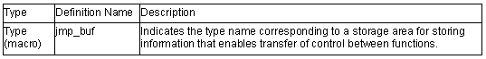

<setjmp.h>
Supports transfer of control between functions.
The following macros are implementation-defined.

The setjmp function saves the calling environment of the current function. The location in the program that called the setjmp function can subsequently be returned to by calling the longjmp function. An example of how transfer of control between functions is supported using the setjmp and longjmp functions is shown below.
Example:
1 #include <stdio.h>
2 #include <setjmp.h>
3 jmp_buf env;
4 void main( )
5 {
6
7
8 if (setjmp(env)!=0)
9 printf("return from longjmp\n");
10 exit(0);
11 }
12 sub( );
13 }
14
15 void sub( )
16 {
17 printf("subroutine is running \n");
18 longjmp(env, 1);
19 }
Explanation
The setjmp function is called in line 8. At this time, the environment in which the setjmp function was called is saved in jmp_buf type variable env. The return value in this case is 0, and therefore function sub is called next.
The environment saved in variable env is restored by the longjmp function called within function sub. As a result, the program behaves just as if a return had been made from the setjmp function in line 8. However, the return value at this time is the value (1) specified by the second parameter of the longjmp function. As a result, execution proceeds from line 9.
int setjmp(jmp_buf env)
Description: Saves the calling environment of the currently executing function in the
specified storage area.
Header file: <setjmp.h>
Return values: When setjmp function is called: 0On return from longjmp function: Nonzero
Parameters: env Pointer to storage area in which calling environment is to be saved
Example: #include <setjmp.h>int ret;
jmp_buf env;
ret=setjmp(env);
Remarks: The calling environment saved by the setjmp function is used by the longjmp function. The return value is 0 when the function is called as the setjmp function, but the return value on return from the longjmp function is the value of the second parameter specified by the longjmp function.
If the setjmp function is called from a complex expression, part of the current calling environment, such as the intermediate result of expression evaluation, may be lost. The setjmp function should only used in the form of a comparison between the result of the setjmp function and a constant expression, and should not be called within a complex expression.
void longjmp(jmp_buf env, int ret)
Description: Restores the function calling environment saved by the setjmp function, and transfers control to the program location at which the setjmp function was called.
Header file: <setjmp.h>
Parameters: env Pointer to storage area in which calling environment was saved
ret Return code to setjmp function
Example: #include <setjmp.h>int ret;
jmp_buf env;
longjmp(env, ret);
Remarks: The longjmp function restores from the storage area specified by env the function calling environment saved by the most recent invocation of the setjmp function in the same program, and transfers control to the program location at which that setjmp function was called. The value of longjmp function parameter ret is returned as the setjmp function return value. However, if ret is 0, the value 1 is returned to the setjmp function as a return value.
If the setjmp function has not been called, or if the function that called the setjmp function has already executed a return statement, the operation of the longjmp function is undefined.